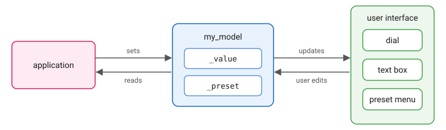

The Model
Overview
In the last tutorial, each control’s handler set the other two controls by hand. That works for three. With a dozen controls showing the same value, or a value that the program also changes on its own, every handler has to know about every control, and a control added later has to be added to all of them.
examples/model shows the way out. It has one value shown three ways:
a knob, a text box with the value as a number, and a menu of presets.
Turn the knob and the number follows; type a number and the knob
turns; choose a preset and both move to it. No handler names another
control. Each control is linked to a model of the value, and the
handlers set the model:

A model holds a value and a list of elements to update when the value changes. Your program reads and sets the model as it would a plain variable, and every element linked to it shows the change. The elements are linked once, when the window is built, and nothing else in the program names them. Model is the reference.
The Model
// This is our simple model, comprising of a preset (an enum)
// and a value normalized to 0.0 to 1.0.
struct my_model
{
enum preset
{
preset_none,
preset_100_percent,
preset_75_percent,
preset_50_percent,
preset_25_percent,
preset_0_percent,
};
value_model<float> _value = 1.0; (1)
value_model<preset> _preset = preset_100_percent;
};| 1 | value_model<float> behaves like a float: assign to it, read
it, compare it. Assigning to it also updates every element linked
to it. |
The model is a plain struct, with nothing in it about the user interface. The program could use it with no window at all.
Linking the Knob
// Make a dial
auto dial_ptr = share(dial(radial_marks<20>(basic_knob<80>())));
// The dial follows the value, and gets the value the model holds right
// now. What the user does to the dial comes here instead of straight
// to the model, because there is more to do than assign: the value is
// no longer one of the presets, so the preset is taken off as well.
view_.bindings().follow(model._value, dial_ptr, (1)
[&model](double val)
{
if (model._value != val)
{
model._value = val; (2)
model._preset = my_model::preset_none;
}
}
);| 1 | From here on, the dial shows model._value: it takes the value
now, and again each time the value changes. |
| 2 | When the user turns the dial, the handler sets the model, and the model updates the dial and the text box. The preset is cleared, because the value is no longer one of them. |
The link is made through the view’s bindings, and the view takes the
link off the model when the view is destroyed. bind is the simpler
form, for a control whose changes go straight into the model with
nothing else to do; follow is for when there is, as here.
Linking the Text Box and the Menu
A text box shows text, not a number, so it cannot be linked with
bind. attach takes a function that puts the value into the
element, in whatever form the element shows:
view_.bindings().attach(model._value, tbox.second,
[](auto& input, double val)
{
std::ostringstream stream;
stream << std::fixed << std::setprecision(2) << val;
input.set_text(stream.str());
input.select_all();
}
);The dial and the text box are now both linked to _value. A model
updates every element linked to it, in the order they were linked.
The preset menu’s label is attached to _preset the same way. When
the user chooses a preset, the menu’s handler sets both parts of the
model and nothing else:
// Set the model's preset
model._preset = select;
// Set the value of the model accordingly.
switch (select)
{
case my_model::preset_100_percent:
model._value = 1.0;
break;Rejecting a Value
The text box takes a number when the user presses Enter. Text that is not a number, or a number outside 0 to 1, is refused with a message box, and the text box goes back to showing the model:
if (error != "")
{
auto on_ok =
[&model]()
{
// When errors are encountered, reset the model's value to
// its previous state.
model._value.update(); (1)
};
// Bring up a message box.
auto popup = message_box1(view_, error, icons::attention, on_ok);
open_popup(popup, view_);
return false;
}| 1 | update() sends the model’s current value to every linked
element again. The text box shows it in place of what was typed. |
The Program
// Our simple model, declared before the view so that it is destroyed
// after it. The view's bindings leave the model on their way out, and
// the model has to still be there for that.
my_model model;
view view_(_win);
view_.content(
make_content(model, view_),
background
);
model._value = 1.0; (1)| 1 | The program sets the model. The dial turns and the text box shows
1.00, and the program named neither of them. |
The order of the two declarations matters: the model is declared first, so it outlives the view, and the view can remove its links from the model on the way out.
Running
cmake -B build
cmake --build build --target ModelThe program is in build/examples/model. Turn the knob, type a value
between 0 and 1 and press Enter, or choose a preset.
Try It
-
Add a second dial, linked to
_valuewith the samefollowcall. Both dials and the text box now move together, and no handler changed. -
Change
model._value = 1.0;at the end ofmainto0.5. The window opens with the knob at the middle and the text box showing0.50. -
In the dial’s handler, delete the line that sets
_preset. Turn the knob: the menu keeps showing the last preset, although the value no longer matches it.
Components Used
| Component | Role |
|---|---|
Holds a value and updates the elements linked to it. |
|
Link an element to a model, for as long as the view lasts. |
|
Shows and sets the value. |
|
Shows the value as a number, and takes one typed in. |
|
Chooses a preset. |
|
Reports a value that was refused. |
Copyright (c) 2014-2026 Joel de Guzman. All rights reserved. Distributed under the MIT License